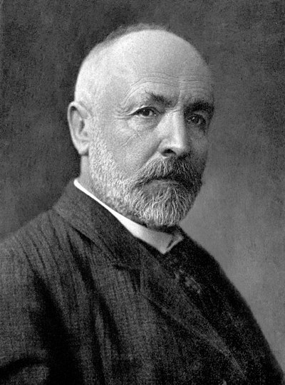

1845–1918
German (born in Russia)
Set theory, analysis, topology
Georg Cantor was born in Saint Petersburg to a German family and grew up in Germany from age eleven. He studied at the ETH Zurich and the University of Berlin under Weierstrass, Kummer, and Kronecker, completing his doctorate in 1867 on number theory. He spent his entire career at the University of Halle, never obtaining the Berlin professorship he desired.
Cantor's work on trigonometric series in the early 1870s led him to investigate the structure of point sets on the real line — and from there, to the revolutionary idea that infinite sets come in different sizes. His 1874 proof that the reals are uncountable, followed by the diagonal argument of 1891, established that there is no bijection between $\mathbb{N}$ and $\mathbb{R}$. He also constructed the real numbers as equivalence classes of Cauchy sequences of rationals (1872), independently of Dedekind's cut construction.
His set theory met fierce opposition, most notably from Kronecker, who called him a "corrupter of youth." The continuum hypothesis — whether any cardinality lies between $\aleph_0$ and the continuum — consumed his later years without resolution (Godel and Cohen later showed it is independent of the standard axioms). Cantor suffered repeated bouts of depression and spent his final years in a sanatorium. Hilbert famously defended his legacy: "No one shall expel us from the paradise that Cantor has created."
| Phase | Page | Referenced for |
|---|---|---|
| Phase 2 | Completeness of ℝ | Cauchy sequence construction of the reals (1872) |
| Phase 2 | Completeness of ℝ | Demanding precision in the definition of real numbers |
| Phase 2 | The Cauchy Criterion | Constructing ℝ from ℚ via equivalence classes of Cauchy sequences |
| Phase 2 | Dense Subsets of ℝ | Independent formalisation of the real numbers |
| Phase 5 | The Weierstrass M-Test | Student of Weierstrass who disseminated his methods |
| Phase 9 | Open and Closed Sets | Point-set theory: closed sets hold their limit points (1884) |
| Phase 9 | Open and Closed Sets | Historical development of point-set topology (1870s–1880s) |
| Phase 9 | Completeness in Metric Spaces | 1872 construction of ℝ as Cauchy sequence equivalence classes |
| Phase 9 | Baire Category and Arzelà-Ascoli | The Cantor set as a nowhere dense set; diagonal argument |
| Phase 11 | Fourier Series | Fourier convergence question driving the creation of set theory |